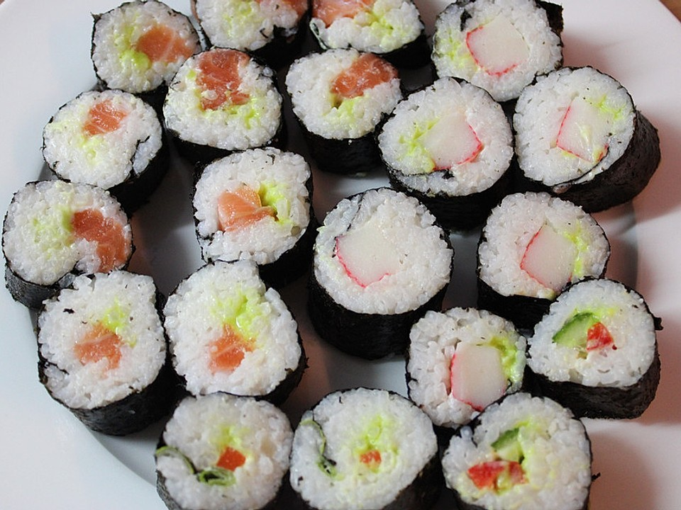

Recipe: Sushi

Description
The Japanese cuisine is special in their own right. After thousands of years exquisite delicatesses like Sushi have been discovered and have spread in the modern era like wildfire.
Ingredients for 3 sushi rolls = 3 portions
Mandatory ingredients:
- 300g rice
- Salmon
- 3 seaweed rolls
If you like you can add vegetables like:
- Cucumber
- Avocado
- Radish
and more of what you like...
Preparation
- Wash your rice thouroughly several times
- Boil 3l of water, add salt and your rice and reduce the heat on a low level
- Let your rice boil for around 20 minutes
- Turn off the stove and let your rice soak in all the water for ten more minutes
- Prepare your first seaweed roll on a board cut it down if needed
- Slowly and evenly add your rice onto the seaweed
- Add your salmon on top of the rice
- Slowly but surely roll up your seaweed rolls
- Once your seaweed roll is rolled up cut it down in evenly 2cm wide pieces
- Repeat this 2 times for your two other rolls
- Finish up your Sushi preferably with Wasabi or some Soja sauce
Wanna go back and check out other recipes? Click
here.